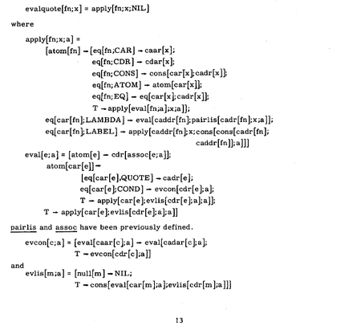

Early LISP History (1956 - 1959) ~ Herbert Stoyan
History of Lisp ~ John McCarthy
Revenge of the Nerds ~ Paul Graham
Lets LISP like it’s 1959 // LISP and the foundations of computing
“Programming is the problem of describing procedures or algorithms to an electronic calculator.”
~ John McCarthy, The Programming Problem
Un lenguaje de programación para Inteligencia Artificial Simbólica.
McCarthy busca un lenguaje: Explicito, universal, conciso.
Una respuesta al modelo secuencial (la máquina de Turing) y al paradigma imperativo (FORTRAN).
Idea
En los 50 se empiezan a desarrollar los primeros lenguajes de alto nivel (FLOW-MATIC, FORTRAN)
En 1956, en una conferencia de AI, McCarthy se inspira para comenzar a diseñar LISP (LISt Proccessing) usando:
Las ideas de procesamiento de listas y recursión de IPL-II
El alto nivel de FORTRAN (1957) y su expresión algebraica.
La notación del cálculo Lambda de Alonzo Church.
Definición
1958: “An Algebraic Language for the Manipulation of Symbolic Expression”
Primer diseño (incompleto) de LISP.
Comienzos de la programación funcional.
1960: “Recursive Functions of Symbolic Expressionsand Their Computation by Machine, Part I”
Especificación completa de LISP, un lenguaje teórico, que no estaba pensado para ser implementado.
Solución más comprensible a la máquina de Turing.
Para demostrar que es Turing-Completo, define una “función universal de LISP”, que luego llegaría a ser eval.
Implementación
1960: Steve Russell, un alumno de McCarthy, decide probar e implementar en código máquina eval
1962: Tim Hart y Mike Levin hacen el primer compilador de LISP.
Lo más cercano al LISP que conocemos hoy en día.
Funciones compiladas e interpretadas pueden ser intercambiadas libremente.
What Made Lisp Different ~ Paul Graham
Influential Programming Languages, Lisp ~ David Chisnall
if-then-else: Las expresiones condicionales fueron definidas en el paper de 1960, con cond.
Funciones: Las funciones como ciudadanos de primera clase
Recursión: Ya existía matemáticamente, pero nunca en un lenguaje de programación
Garbarge Collection: Con un diseño primitivo (no era concurrente), LISP fue el primer lenguaje en utilizar garbage collection automático.
Tipado dinámico: No hay que explicitar si algo es un átomo o una lista.
Interactividad: Gracias al interprete REPL se tiene feedback inmediato y se puede programar desde abajo para arriba, compilando incrementalmente.
Map y Reduce: LISP fue el primer lenguaje en implementar dos funciones muy importantes en la programación funcional.
;; Todo en LISP se compone de symbolic expressions
1 ; Una s-expression puede ser un átomo -> irreducible
(+ 1 2) ; Una s-expression puede ser una lista -> partible
;; Las s-expressions evaluan a valores
2 ; evalua a 2
(+ 2 3) ; evalua a 5
(+ (+ 2 3) 2) ; (+ 2 3) evalua a 5 -> todo evalua a 7
;; Acá comienza la dualidad entre código (la lista) y data (el átomo)
;; Ambos son S-expressionseval, quoteCode vs Data (Metaprogramming) ~ Computerphile
;; El operador quote toma una s-expression y devuelve el código
(+ 1 1) ; evalua a 2
(quote (+ 1 1)) ; evalua a (+ 1 1)
('(+ 1 1)) ; quote se abrevia a '
;; El operador eval toma una s-expresion y devuelve su valor
(eval (+ 1 1)) ; evalua a 2
(eval '(+ 1 1)) ; evalua a 2
(eval ''(+ 1 1)) ; evalua a (+ 1 1)
;; 1 + 1 es 2
;; "1 + 1" es el código 1 + 1Puedo hacer un programa entero, ponerle un ' adelante, y estoy tratando con el código de mi programa.
atom, listp¿Es código o data?
;; atom devuelve si algo es un átomo o no
(atom 1) ; True (el valor de la expresion 1 es un átomo)
(atom (+ 1 2)) ; True (el valor de la expresion (+ 1 2) es un átomo)
(atom '(+ 1 2)) ; Nil (la expresion (+ 1 2) es una lista)
;; listp devuelve si algo es una lista o no
(listp 1) ; Nil (1 no es una lista)
(listp (+ 1 2)) ; Nil (la expresion evalua a 3, no es una lista)
(listp '(+ 1 2)) ; True (estoy hablando del código de la expresion, la lista)car, cdr, cons y listLas listas en LISP son listas enlazadas
Los “nodos” (dato y prox) se llaman cons cells
El dato actual es el car
El resto es otra lista, el cdr
;; car recibe una lista y devuelve su primer elemento
(car (+ 1 2)) ; explota, no recibio una lista
(car '(+ 1 2)) ; devuelve +
;; cdr recibe una lista y devuelve el resto (todo menos el primer elemento)
(cdr '(+ 1 2)) ; devuelve (1 2)
;; cons crea un cons de un valor seguido de una lista
;; AKA agrega un valor al principio de la lista
(cons '1 '(2 3)) ; devuelve (1 2 3)
(cons '+ '(2 3)) ; devuelve (+ 2 3)
;; list compone una lista de sus argumentos
(list 1 2 3) ; devuelve (1 2 3)
(list '+ 2 3) ; devuelve (+ 2 3)
;; si tan solo hubiese una manera de ejecutar esta expresion!;; Partimos de la expresion (+ 1 2)
(+ 1 2)
;; La convertimos en el código de la expresion
'(+ 1 2)
;; Sacamos su operador -> el +
(car '(+ 1 2))
;; Sacamos los operandos -> el (1 2)
(cdr '(+ 1 2))
;; Empaquetamos esto nuevamente -> (+ 1 2)
(cons (car '(+ 1 2)) (cdr '(+ 1 2)))
;; Evaluamos la expresion
(eval (cons (car '(+ 1 2)) (cdr '(+ 1 2))))evalThe Roots of LISP ~ Paul Graham
The Most Beautiful Program Ever Written ~ William Byrd
La magía de LISP es el read–eval–print loop: un entorno donde se toma lo escrito por el programador, se lee, se evalua, se imprime, y luego se vuelve a pedir input
Este self-interpreter es un evaluador meta-circular, esta escrito en LISP y puede evaluar código de LISP.
¿Cómo? Gracias a la función eval, definida por McCarthy en base a 7 operadores que toma como axiomas: quote, atom, eq, car, cdr, cons y cond
That was the big revelation to me when I was in graduate school—when I finally understood that the half page of code on the bottom of page 13 of the Lisp 1.5 manual was Lisp in itself. These were “Maxwell’s Equations of Software!” This is the whole world of programming in a few lines that I can put my hand over.
~ Alan Kay, A Conversation with Alan Kay

;; Anotaciones sobre el código de Paul Graham en Roots of Lisp
; The Lisp defined in McCarthy's 1960 paper, translated into Common Lisp.
; eval recibe una expresion `e` y una lista de argumentos `a` -> El "entorno"
; Básicamente, recibe todo el scope donde estoy parado
(defun eval (e a)
; Es todo un if grande de 4 condiciones que chequean el tipo de la expresion
(cond
; Si es un atomo -> Devuelvo su valor en el entorno
((atom e) (assoc e a))
; Si no es un atomo tiene que ser una lista
; Si es una lista del tipo (atomo...resto) -> Es una función!
; (car e) es el operador
; (cadr e) es (car (cdr e)) que es el primero de los argumentos
((atom (car e))
; Si Es una funcion, ¿que funcion es?
(cond
; Si es quote, solo devuelvo los argumentos de la funcion
((eq (car e) 'quote) (cadr e))
; Para el resto de los axiomas, llamo a esa funcion contra los argumentos
; Como quiero llamar a la operacion contra los valores de los argumentos, llamo a eval
((eq (car e) 'atom) (atom (eval (cadr e) a)))
((eq (car e) 'eq) (eq (eval (cadr e) a)
(eval (caddr e) a)))
((eq (car e) 'car) (car (eval (cadr e) a)))
((eq (car e) 'cdr) (cdr (eval (cadr e) a)))
((eq (car e) 'cons) (cons (eval (cadr e) a)
(eval (caddr e) a)))
; cond tiene que evaluar recursivamente todas las condiciones, hasta encontrar el primer true
; para eso, se define una funcion auxiliar, `evcon` que recorre la lista de parametros y los evalua
((eq (car e) 'cond) (evcon (cdr e) a))
; el caso final es recibir una funcion definida por el usuario
('t (eval (cons (assoc (car e) a)
(cdr e))
a))))
; Si no es un atomo ni una lista que comienza por un atomo, entonces es una lista que comienza por otra cosa
; Si es una lista que comienza con label, evaluo la funcion a la que refiere
((eq (caar e) 'label)
(eval (cons (caddar e) (cdr e))
(cons (list (cadar e) (car e)) a)))
; Si es una lista que comienza con lambda, evaluo sus parametros
((eq (caar e) 'lambda)
(eval (caddar e)
(append (pair (cadar e) (evlis (cdr e) a))
a)))))¿? ¿? ¿?